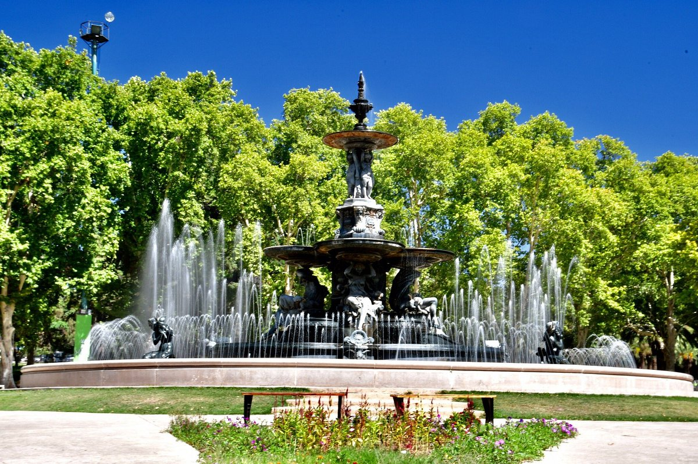

Hotel San Martin - Lujo y Confort en el Corazón de Mendoza
Bienvenido al Hotel San Martin, un refugio de elegancia y comodidad en el hermoso paisaje de Mendoza. Con una ubicación privilegiada en el corazón de la región vinícola de Argentina,
nuestro hotel de 5 estrellas te brinda una experiencia inigualable.
Alojamiento de Primera Clase
Nuestras habitaciones y suites están diseñadas para ofrecerte la máxima comodidad y relajación. Con una decoración elegante y moderna, cada habitación está equipada con las comodidades que necesitas para una estancia inolvidable.
Desde balcones con vistas panorámicas hasta lujosas camas, te sentirás como en casa desde el momento en que entres.
Gastronomía Excepcional
Nuestro restaurante en el lugar te invita a degustar lo mejor de la cocina local e internacional. Descubre los sabores únicos de Mendoza mientras disfrutas de una copa de vino de la región.
También ofrecemos opciones para dietas especiales y menús infantiles para satisfacer todas las preferencias.
Explora Mendoza
Nuestro hotel se encuentra estratégicamente ubicado para explorar las atracciones cercanas, como bodegas de renombre mundial, el Parque General San Martín y el centro histórico de Mendoza.
Nuestro amable personal estará encantado de ayudarte a planificar tus aventuras y excursiones locales.
